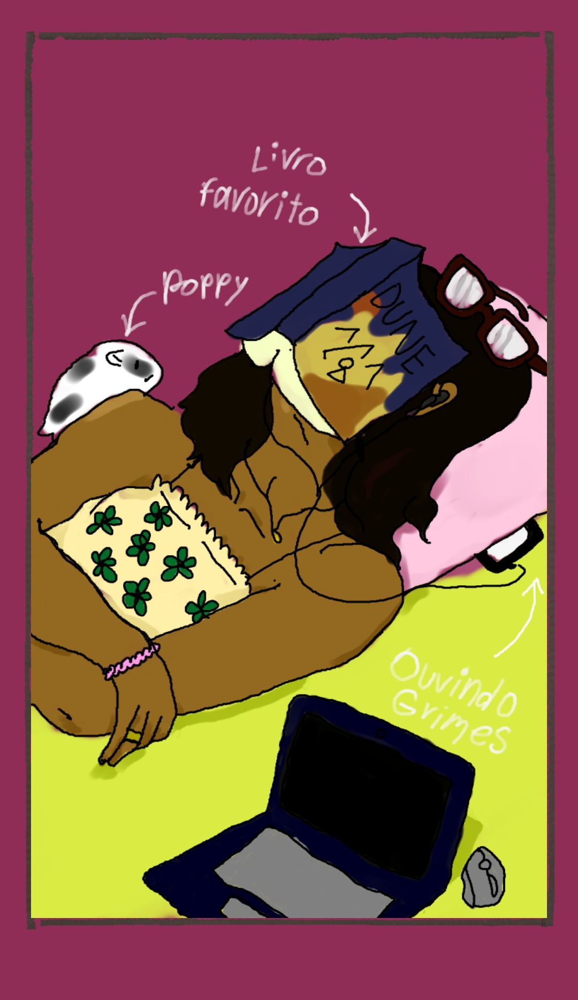
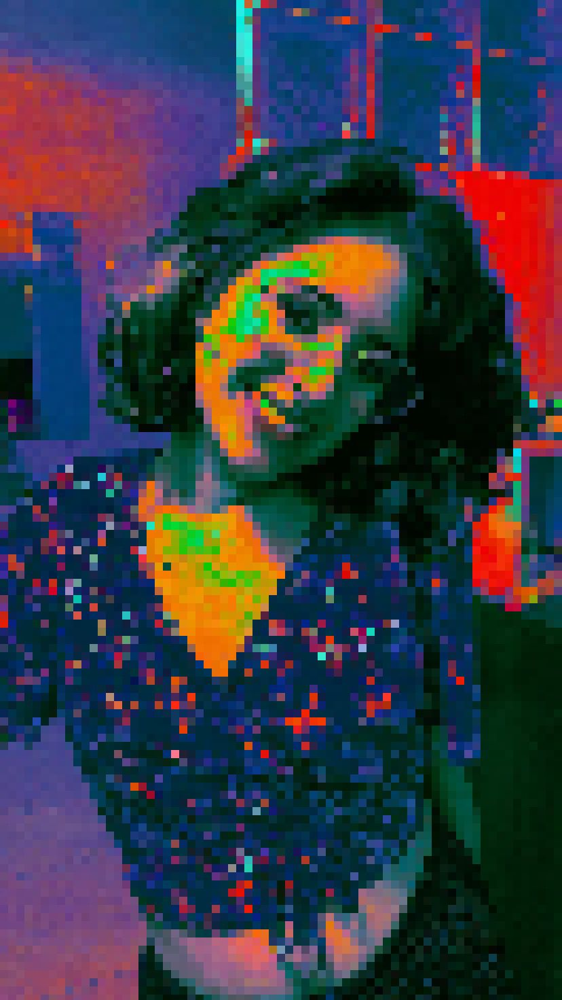

✩ BIBIA LAZER

> info básica:
Essa skin ultra-rara representa nossa personagem em um momento único: lazer!
Quando não está sofrendo com listas no Dikastis, apanhando pra álgebra vetorial ou baixando extensões novas no VSCode, a heroína Bia habilitará as skills especiais de lazer.
> carta da skin:


> skills:
==> escrevendo resenhas e crônicas no seu blog (clica aqui, vai!)
==> lendo/cochilando/lendo/cochilando/...
==> vendo filmes "cult" e dando opiniões no Letterboxd (EM BREVE: skin cinéfila!)
==> jogando The Last of Us
==> fazendo maquiagens semi-conceituais
==> assistindo The Office de novo
==> cantando karaokê
ATENÇÃO! A última skill tem poder de ENSURDECIMENTO nível 20! não ative essa modalidade depois das 20h!